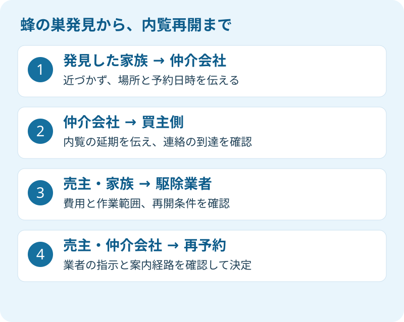

施設へ入居した親の家を、週末に案内する予定がある。掃除に立ち寄った家族が、軒下に蜂の巣を見つけた。そんな場面を想定すると、困るのは駆除の方法だけではありません。「買主がもう出発しているか」「鍵を持った別の担当者が来ないか」も同時に確認する必要があります。
大石浩之（磐田市／不動産業）です。宅地建物取引士として、私は安全に立ち入れない家の内覧を進めません。ここでは自力駆除の方法には踏み込まず、家族、売主、仲介会社、駆除業者の連絡を整理します。情報の確認日は2026年9月20日です。
9〜10月の蜂の巣は、内覧を止めてから考える
堺市の「スズメバチ」は、9〜10月頃は特に活動が活発になると案内しています。同市は、スズメバチの自力駆除には危険が伴うため、専門の駆除業者へ依頼するよう求めています。季節の注意として参照するもので、堺市の相談制度を磐田市で利用できるという意味ではありません。
同資料には、巣を発見しても石をぶつけたり、棒でつついたりしないことも書かれています。庭木のほか、種類によっては土中や屋根裏にも巣を作ります。軒下に丸い巣が見えないだけで、敷地全体が安全だとは判断できません。
私は、蜂の種類がわからない段階でも、まず予約を止める方針で案内します。撮影のために近づく必要はありません。すでに安全な場所から撮った写真があれば共有し、写真がなければ「玄関の右側の軒下」など、わかる範囲の位置を伝えれば十分です。巣の寸法を測るために戻ることもしません。
内覧のための換気や庭掃除もいったん保留です。買主側へ「玄関には来ず、仲介会社からの連絡を待ってください」と明確に伝えます。通常の準備は、実家の内覧で買主が見ている場所と準備を、安全を確認してから再開する順番です。
磐田市は駆除をしない。依頼先と見積もりを分ける
磐田市の公式FAQ「蜂の巣を駆除してほしい。」は、市による駆除は行わず、駆除業者を紹介すると説明しています。問い合わせ先は環境課です。2018年8月27日更新のページを2026年9月20日に確認しました。古い更新日の資料なので、紹介の受付状況は利用時に市へ確認してください。
私は、相談先が公表されている点を評価します。遠方の家族も、誰に入口の相談をするか決められるからです。ただし、市の紹介と業者の契約は別です。「市から紹介されたから追加費用はない」と受け取らず、金額と作業範囲は自分たちの依頼内容に合わせて確かめる必要があります。
| 確認する相手 | 依頼前にそろえる内容 |
|---|---|
| 磐田市環境課 | 駆除業者の紹介についての相談。市の作業予約とは分ける |
| 駆除業者 | 現地調査、駆除、巣の撤去の範囲と見積額 |
| 売主・家族 | 発注者、費用を承認する人、連絡を受ける人 |
| 仲介会社 | 予約停止、鍵の管理、買主側への延期連絡 |
見積もりでは、高所の作業、屋根裏への進入、壁などの開口が必要な場合の扱いを質問します。ここに挙げた作業が必ず必要という意味ではありません。現地で条件が変わったときに、誰の承認を受けて追加作業へ進むかを決めるための項目です。
電話の概算だけで発注する場合も、作業前に総額と変更条件を確認します。私は、料金表の最も安い数字だけで予算を決めることには賛成しません。内覧日が迫っていると比較を急ぎがちですが、「今日来られる」と「提示額で全部終わる」は別の答えです。
予約を守るより、誰が止めるかを決める
空き家の蜂の巣対応は、発見した家族だけで完結しません。売主と仲介会社が、内覧予約、現地作業、鍵の受渡しを同じ情報で管理する必要があります。以下は法定の手順ではなく、私が安全と連絡漏れを考えて提案する進め方です。
私はこう考えます。予約を守るために、危ないとわかった家へ人を入れるのは順番が逆です。家族が休みを取り、買主も予定を空けた事情はわかります。それでも、延期を決める役目を曖昧にしてはいけません。売る機会が遠のくかもしれないという迷いはありますが、私なら仲介担当者が案内停止を明言し、再開の条件を整理します。

最初の連絡は、短くて構いません。「住所、発見した日時、巣が見えた場所、次の内覧日時、現地にいる人」を仲介担当者へ送ります。買主が別の不動産会社を通じて来る場合は、その会社まで情報が届いたかも確認します。送信しただけで終えず、担当者の返信や通話で到達を確かめます。
連絡文の例は「9月20日、玄関の軒下に蜂の巣を発見。近づかず退避済み。次回内覧はいったん延期し、買主側への連絡をお願いします。駆除の依頼先と再開条件は確認後に共有します」です。これは説明用の例文で、実際の相談記録ではありません。わからない部分は推測で埋めず、未確認と書いてください。
鍵を預けている清掃会社や管理会社があれば、そちらにも立入り停止を知らせます。管理契約の点検に駆除まで含まれているとは限りません。契約の範囲を確認する際は、空き家管理サービスで確認する5項目も参考になります。
磐田・袋井の遠方家族は、再開の連絡まで一本化する
磐田・袋井の実家を離れて暮らす家族には、駆除に立ち会える人と、費用を決められる人が別という事情もあります。私は相談の入口で、所有者本人、家族の連絡代表、仲介担当者の役割を紙に書くことを勧めます。親が施設に入居していても、家族というだけで発注や売却の権限まで当然に決まるわけではありません。
売却時の法律上の代理権の判断は、蜂の巣の緊急連絡とは分けて扱います。家族の代表は連絡窓口として決め、契約をする人は別途確認する。その切り分けなら、権限が未確認のまま費用や作業を約束する事態を避けやすくなります。個別の代理や相続の判断は専門家に確認を。
駆除後は業者に、立入りを控える範囲、再開できる時期、蜂が戻った場合の連絡先を確認します。作業完了報告や写真があれば保管しますが、写真だけで安全を保証したことにはしません。仲介会社が業者の指示を共有し、玄関から室内への案内経路を確認してから、新しい予約を入れます。
豊岡地区などの空き家を管理する話では、害獣への対応と蜂への対応も混ぜないようにします。豊岡の獣害と空き家管理は別の確認項目です。ひとつの作業を頼んだから、敷地の生き物の問題が全部解消したと考えない。この区別は見積書の範囲を読むときにも役立ちます。
今日することは、予約と連絡先を照合する
蜂の巣を発見した家族が今日確認するのは、次に現地へ入る予定の人と、その連絡先です。巣の観察を続けるより、予約表と鍵の預け先を確認してください。売却を続けるかどうかの結論は、安全確保と切り離して考えられます。
- 内覧日時と買主側の担当者を確認し、延期の連絡を完了する。
- 駆除の発注者と費用承認者を決め、見積書の範囲を確認する。
- 業者が示した立入り再開の条件を、売主と仲介会社で共有する。
富士ヶ丘サービスでは、介護と不動産を一体で相談できる入口を設けています。磐田市・袋井市を中心に、施設入居後の家の管理と売却準備をつなぎます。家族が困らない売却のために、私は「何日に売り出すか」より先に、「誰が家へ入り、誰が連絡を止めるか」をそろえるよう案内します。